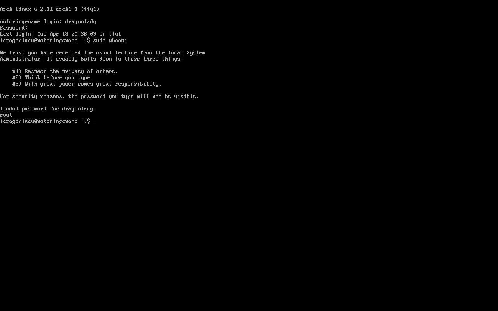

Using the OS
Congratulations, you have installed Arch! Before you start exploring on your own, we have a few important steps.
1 Make a non-root user
The default user is root, which has all permissions at all times.
This means that it's easy to accidentally break your install by running the wrong command,
and is also a security risk.
To fix this, you can create your own user account using the useradd command.
$ useradd -m dragonlady
$ passwd dragonlady
As a reminder, when you type in your password, you will not see anything appear on screen.
1.1 Add yourself as a "sudoer"
By default, normal user accounts cannot do things like install software or change system files.
To temporarily give yourself higher permissions, you can use the sudo command.
To give your account access to the sudo command, you need to add yourself to the following file.
$ EDITOR=nano visudo
In nano, press Ctrl-w and then type root ALL to find the line containing the entry for the root user.
Directly below it, add the following line, substituting in whatever username you picked:
dragonlady ALL=(ALL:ALL) ALL
Once that's done, you can logout using the logout command and log back in as your new account.
Now, you can try running the following commands to make sure it worked:
$ whoami
$ sudo whoami
The first command should print out your username.
The second command will ask you for your password, and then print out root.

2 Enable Networking
To tell Arch to enable the networking service on startup, we can use systemctl enable.
If we rebooted the machine, it would start working on the next login.
However, we can tell Arch to start running the service immediately using systemctl start.
$ sudo systemctl enable dhcpcd.service
$ sudo systemctl start dhcpcd.service
$ ping www.example.com
Reminder: you can press Ctrl-c to stop ping once you see a few successful packets.
Installing packages
Now that you have an internet connection and the sudo command,
you could try installing some new software.
Most Linux distributions have a program called a package manager
that allows you to install, uninstall, and update software.
The package manager for Arch is called pacman.
To install packages, use the following command:
$ pacman -S package_to_install anotherpackage aThirdPackage
This system is very powerful:
even adding an entire windowed desktop environment can be done
just by installing some packages with pacman,
as you will see in the following step.
Desktop Environment
While the command line is one of the most versatile tools a Linux user has, graphical interfaces are still useful for a wide variety of tasks. There are several different desktop environments you could pick from, but we have found the simplest option to be using KDE Plasma with XOrg.
$ sudo pacman -S xorg-server xorg-apps xorg-xinit xterm xorg-fonts-100dpi xorg-fonts-75dpi autorandr
$ sudo pacman -S sddm plasma kde-applications plasma-nm ttf-dejavu ttf-liberation sddm
If all of the packages install successfully, then all you need to do to enable your new desktop environment is start the service:
$ sudo systemctl enable sddm
$ sudo systemctl start sddm